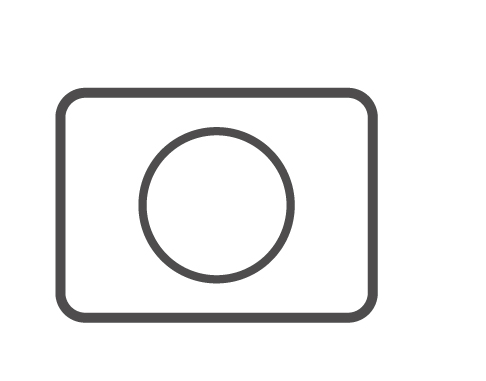

การเริ่มต้นใช้กล้องของพระองค์

พระบาทสมเด็จพระเจ้าอยู่หัว
ทรงโปรดปรานเกี่ยวกับ
การถ่ายภาพเป็นอย่างมาก
ตามที่ประชาชนจะเห็น
ภาพของพระองค์ห้อยกล้องไว้
ที่พระศอเสมอ
พระองค์ทรงเริ่มถ่ายภาพ
เมื่อมีพระชนมายุเพียง 8 พรรษา
โดยสมเด็จพระราชชนนี
ทรงได้ซื้อกล้องถ่ายรูป
Coronet Midget ขนาดเล็ก
พระราชทานให้เมื่อปีพ.ศ. 2479
พระองค์ทรงศึกษาการใช้กล้อง
รวมไปถึงวิธีการถ่ายภาพ
ด้วยพระองค์เองและ
ถามจากผู้รู้ ผู้ชำนาญ
กระทั่งพระองค์ถนัด
การใช้กล้องในรุ่นนั้นๆ
เริ่มต้นเป็นช่างภาพวารสารแสตนดาร์ด
ในอดีต กล้องถ่ายภาพไม่เจริญเท่าปัจจุบัน
ยังคงเป็นกล้องฟิล์มที่ไม่มีระบบอัตโนมัติ
เวลาจะถ่ายภาพแต่ละครั้งต้องปรับรูรับแสง
ตั้งความไวของชัตเตอร์ ซึ่งเป็นเรื่องยุ่งยาก
สำหรับผู้ที่เริ่มสนใจการถ่ายภาพ
แต่พระองค์ทรงศึกษาและใช้กล้อง
ได้อย่างชำนาญทั้งกล้องญี่ปุ่น
รัสเซีย เยอรมัน
ในช่วงเวลาที่พระองค์
ทรงดำรงพระยศเป็นพระอนุชา
ทรงถ่ายภาพรามเกียรติ์ที่ผนังพระอุโบสถ์
วัดพระศรีรัตนศาสดารามและ
ทรงพระกรุณาโปรดเกล้าฯ
พระราชทานให้พิมพ์
ในหนังสือพระราชทานเพลิงศพ
สมเด็จพระเจ้าบรมวงศ์เธอ
กรมพระยาชัยนาทนเรนทร
นอกจากนี้พระองค์ท่านยังทำหน้าที่
เสมือนช่างภาพส่วนพระองค์
ในขณะตามเสด็จรัชกาลที่ 8 อีกด้วย
เมื่อขึ้นครองราชสมบัติแล้ว
ก็ทรงโปรดถ่ายภาพสิ่งต่าง ๆ เป็นประจำ
ภาพถ่ายฝีพระหัตถ์ของพระองค์
จะปรากฏบนปกนิตยสารต่าง ๆ เสมอ
เช่น วารสารแสตนดาร์ดของพระวรวงศ์เธอ
พระองค์เจ้าเปรมบุรฉัตร ปี 2483
“ฉันเป็นกษัตริย์ก็จริง แต่ฉันก็ยังมีอาชีพเป็นช่างภาพของหนังสือพิมพ์แสตนดาร์ด
ได้เงินเดือนเดือนละร้อยบาทตั้งหลายปีมาแล้ว จนบัดนี้ก็เห็นเขายังไม่ขึ้นเงินเดือนให้สักที
เขาก็คงถวายไว้เดือนละร้อยบาทอยู่เรื่อยมา”
- พระราชดำรัสของพระบาทสมเด็จพระปรมินทรมหาภูมิพลอุดลยเดช